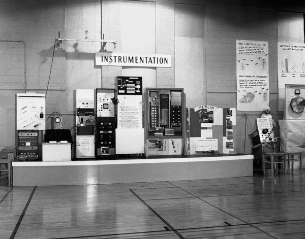
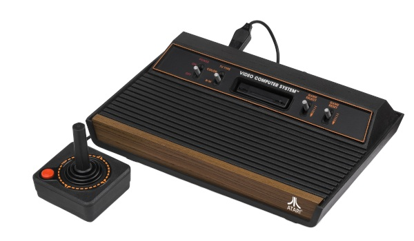
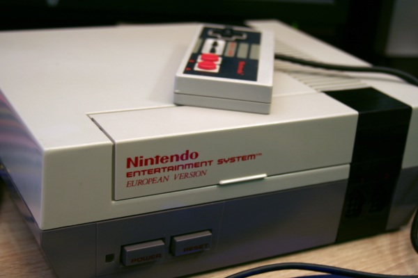
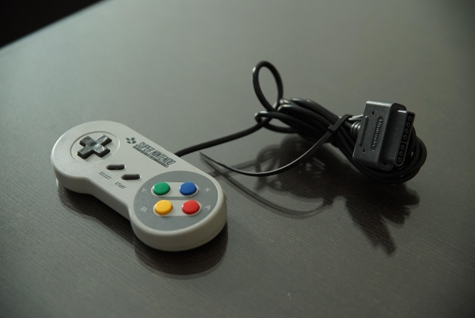
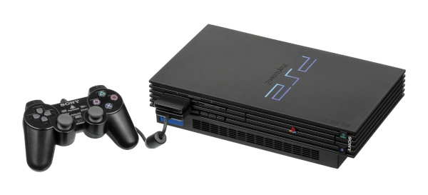
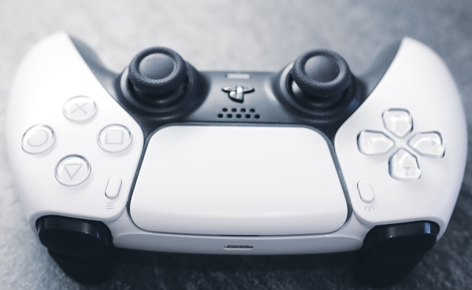
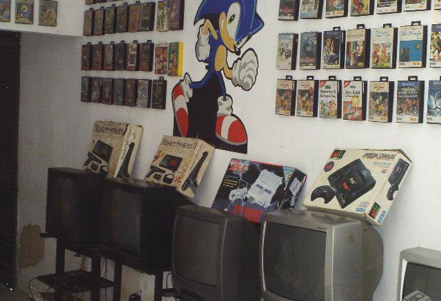
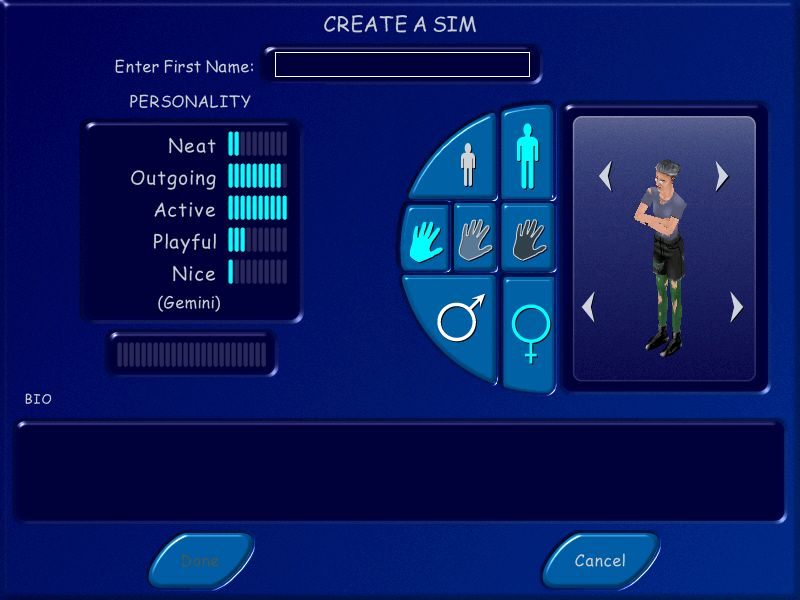
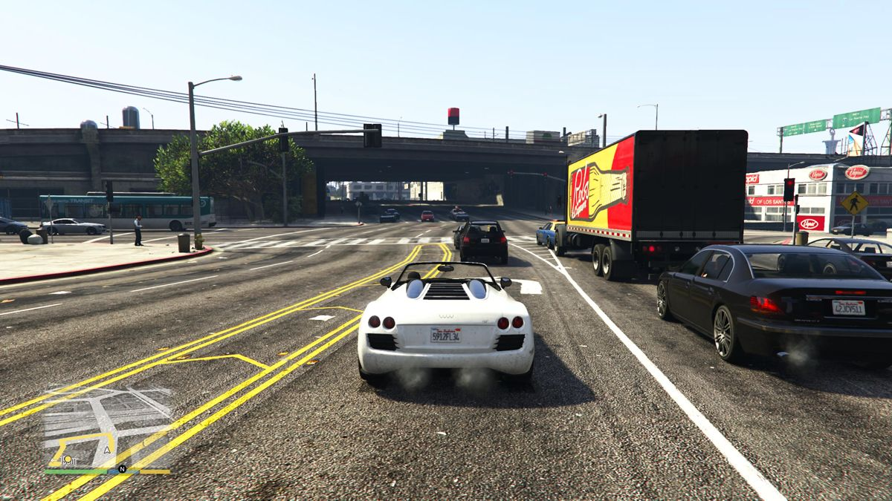
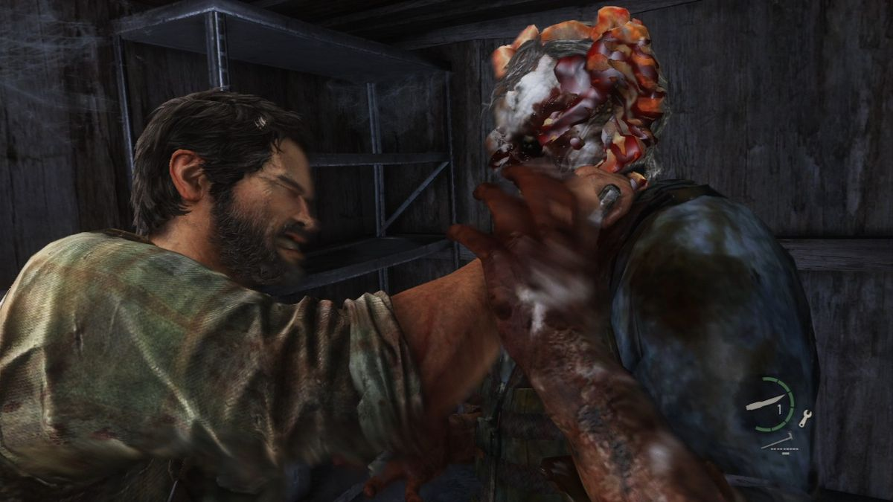

A história dos Consoles
Anos 1950 e 1960:
A história começa em laboratórios universitários com experimentos como Tennis for Two (1958).

Tennis for TwoAnos 1970:
Atari lança o fliperama Pong (1972). O Atari 2600 populariza o uso de cartuchos trocáveis.

Atari 2600Anos 1980:
A indústria é salva pela japonesa Nintendo com o lançamento do NES e de Super Mario Bros.

NES NintendoAnos 1990:
A década começa com a rivalidade feroz entre Super Nintendo e Sega Mega Drive.

Super NintendoAnos 2000:
O PlayStation 2 se torna o console mais vendido da história. Houve um aumento expressivo da pirataria no mundo gamer.

Playstation 2Anos 2010 até hoje:
O formato físico perde espaço para lojas digitais (como a Steam). Os jogos de smartphone se tornam um mercado bilionário.

Playstation 5A Era de Ouro das Locadoras e Lan Houses
Nas locadoras, o Playstation 2 brilhava nas TVs de tubo.

enquanto nas Lan Houses, os teclados faziam barulho noite adentro
em partidas, competições e tiroteios intensos
A Febre dos Navegadores e Redes Sociais
A internet democratizou o acesso aos jogos através do saudoso Adobe Flash.

Foi a era de gerenciar fazendas virtuais e interagir em salas de bate-papo.
A Era dos Mundos Abertos, Narrativas e Sobrevivência
Universos infinitos onde o jogador dita as próprias regras de sobrevivência

Experiências solitárias focadas em histórias cinematográficas profundas.
